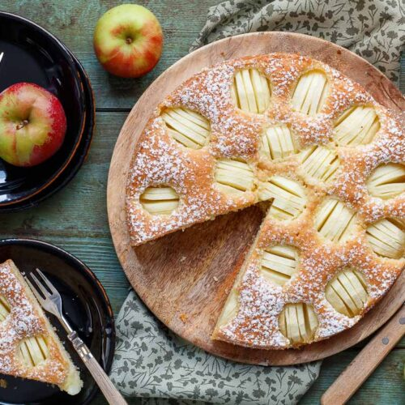

Apfelkuchen
Zutaten
- 3 Äpfel
- 150 g Butter oder Margarine
- 150 g Zucker
- 1 Prise(n) Salz
- 2 Eier (Gr. M)
- 1 Pck. Puddingpulver "Vanillegeschmack" (zum Kochen)
- 250 g Mehl
- 3 TL, gestr. Backpulver
- 5 EL Milch
- Fett und Mehl für die Form
- Puderzucker zum Bestäuben
Rezept
- Äpfel schälen, vierteln, Kerngehäuse herausschneiden und Fruchtfleisch in Würfel schneiden.
- Fett, Zucker und Salz mit den Schneebesen des Handrührgerätes weißcremig aufschlagen. Eier nacheinander unterrühren.
- Puddingpulver, Mehl und Backpulver mischen. Mehl-Mischung und Milch abwechselnd unter den Teig heben. Äpfel unter den Teig heben. Teig in eine gefettete, mit Mehl ausgestäubte Springform (26 cm Ø) geben und glatt streichen. Kuchen im vorgeheizten Backofen (E-Herd: 175 °C/ Umluft: 150 °C/ Gas: s. Hersteller) ca. 45 Minuten backen.
- Kuchen aus dem Ofen nehmen, auf einem Kuchengitter auskühlen lassen und aus der Form lösen. Mit Puderzucker bestäuben.
